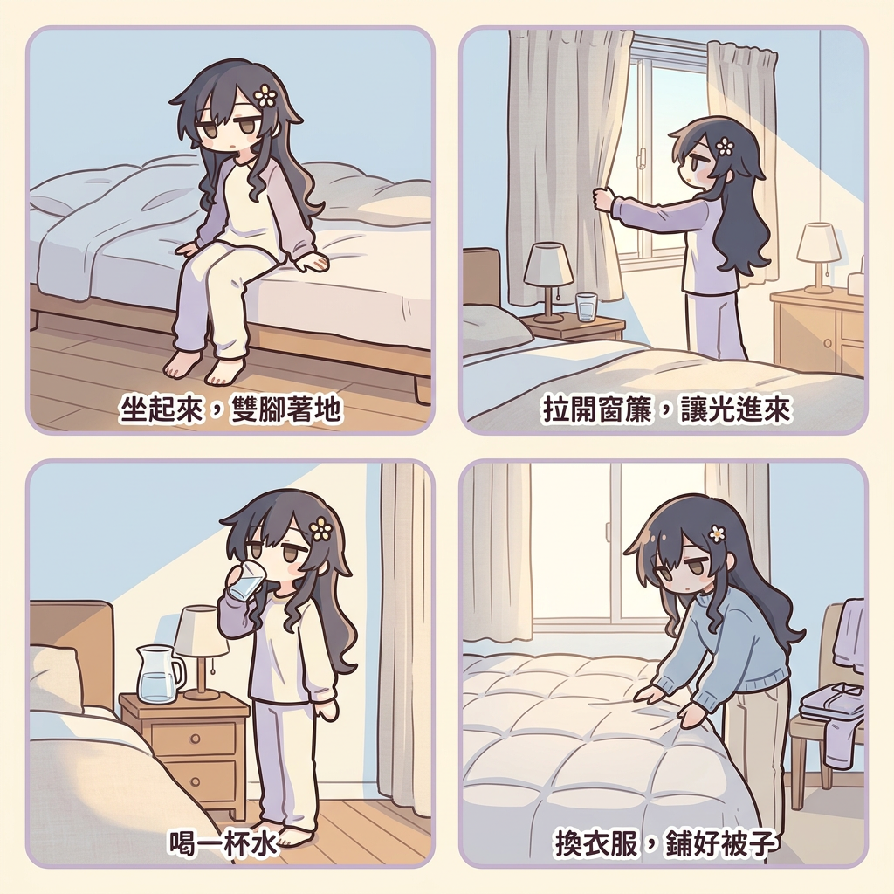
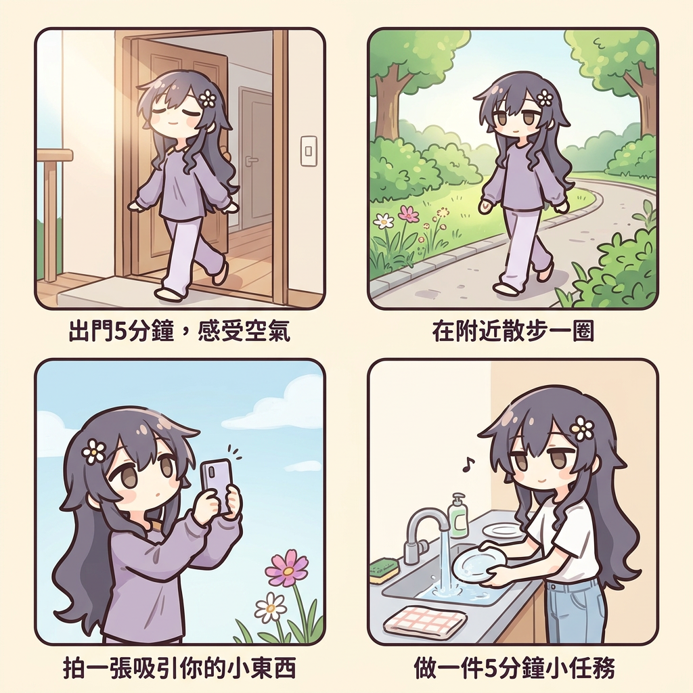
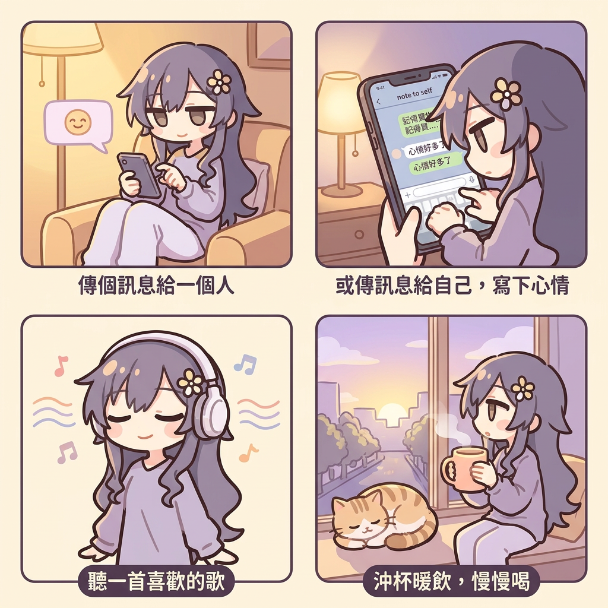
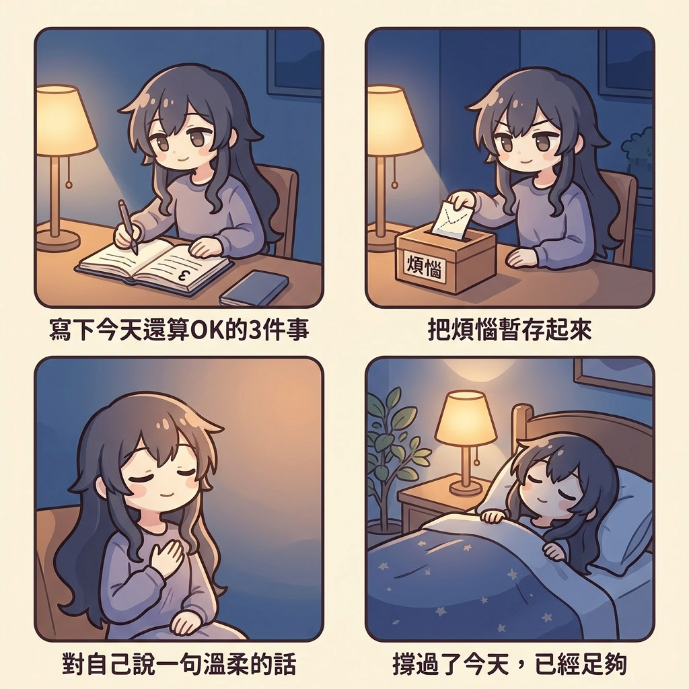

抑鬱的時候，「康復」聽起來太遙遠、太龐大。所以，不要想得那麼遠。

起床的那一刻往往最沉重，全身彷彿有千斤重。這是抑鬱的特徵，不是你懶惰。

抑鬱會叫你「等有心情才做」。但事實剛好相反。

抑鬱想你把自己收起來。每一點點的連結，都是溫柔的反抗。

無論今天怎樣度過，你都撐到天黑了。這本身就值得肯定。
這些每天的小步，可以和網站上的其他工具一起使用。
每天記下情緒和小行動，看見自己慢慢的變化。
當焦慮和情緒一起來襲時，先安撫身體。
用五感把自己帶回當下，溫柔地照顧自己。
當情緒非常痛苦、有傷害自己的念頭時，這裡有即時的支援。